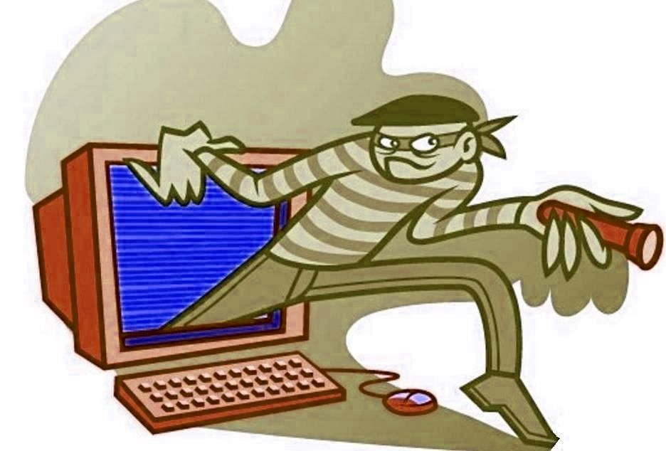

Что такое безопасный интернет?
Безопасный интернет — это осознанное использование сети, при котором вы защищены от мошенничества, вирусов, кражи данных и других угроз. Это включает в себя знание опасностей, осторожность и использование современных средств защиты.
5 правил интернет-безопасности
- Используйте сложные пароли и двухфакторную аутентификацию.
- Не переходите по подозрительным ссылкам и письмам.
- Не сообщайте личные данные посторонним.
- Обновляйте антивирус и операционную систему.
- Проверяйте сайты на подлинность перед вводом паролей.
Опасности в интернете
В интернете вас могут подстерегать фишинг, вредоносное ПО, утечки данных, кибербуллинг, шантаж и даже кража личности. Знание угроз помогает им противостоять.
Как защититься?
Установите антивирус, включите брандмауэр, обновляйте ПО, проверяйте разрешения приложений и учитесь кибергигиене. Никогда не сохраняйте пароли в открытом виде.